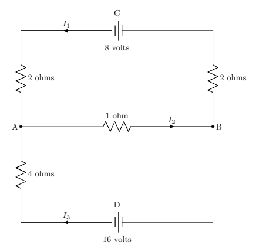
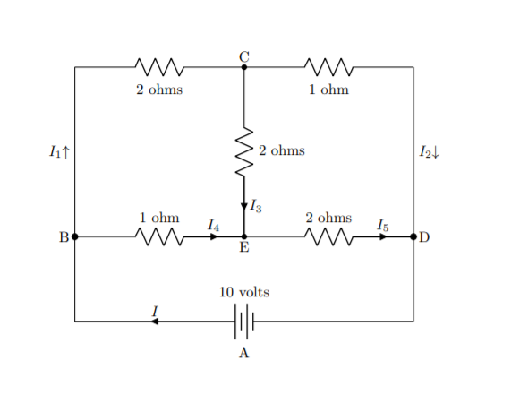

Section1.4Geometric Interpretations and Applications
In this section we will look at some examples of geometric interpretation of solutions to a system of linear equations, then we will look at a few examples of common application problems related to our study of linear systems.
Subsection1.4.1Geometric Interpretation of a Solution Set
Recall from earlier, that the solution set of a linear equation in two variables was a line in \(\mathbb{R}^2\) (the plane) and that the solution set of a system of two equations in two variables was possibly a point, a line, or empty. Similarly, the solution set for a linear equation in three variables will be a plane in 3-space (\(\mathbb{R}^3\)).
Activity1.4.1.
List out all the possible ways two planes can intersect in a three dimensional space.
List out all the possible ways three planes can intersect in a three dimensional space.
List out all the possible ways four planes can intersect in a three dimensional space.
List out all the possible ways five planes can intersect in a three dimensional space.
We don’t usually draw what a solution set of a linear equation in four variables looks like because drawing in four dimensions is difficult. The graph is a single linear equation in four variables would be called a hyperplane in \(4\)-space. Although we don’t draw \(m\) hyperplanes in \(n\)-space, the intersections of hyperplanes will work very similarly to the pictures we can draw in 3-space (also known as \(\mathbb{R}^3\)).
We can use the open source computer algebra system SageMath to plot things, and we can even do it right here in the course notes. Click the button to plot a plane below.
Plotting the equations, \(3x-2y-z=0\text{,}\)\(2x+y+z=10\text{,}\) and \(x+4y+3z=20\) in red, yellow, and green respectively gives:
Investigation1.4.2.
Does your answer to Task 1.2.4.b make sense with this plot? Explain.
Question1.4.1.
For each of the systems in Activity 1.2.8, use SageMath to draw a plot of each of the equations in the system and write a sentence for each system about why the plot and your answer to Activity 1.2.8 make sense.
Hint.
You can edit the code block above and click the button again, and it will update the graph.
If you remember parametric equations of lines and planes in space from multivariable calculus, then we will return to those ideas soon
Subsection1.4.2Applications and Linear Algebra
Many network or physical problems are diagramed by a figure that displays how different parts are connected and how much of something can flow between different nodes. A particularly common diagram is that of electric circuits. We will look at a couple of laws now that help us set up a system of equations for common circuit types.
An electrical network is a specialized network where we specify the locations of resistors, batteries, devices powered by sources, and others.The goal is often to determine the current through various locations of the network. In balancing a network we use two specific laws: Current and Voltage.
Current Law: sum of the currents flowing into any node is equal to the sum of the currents flowing out of that node. This is often called the conservation of flow.
Voltage Law: The sum of the voltage drops around any circuit is equal to the total voltage around the the circuit, most likely provided by batteries or other power source.
The above laws are attributed to Gustav Kirchhoff and are called Kirchhoff’s Laws. We should also mention Ohm’s Law, which describes the force, in volts, associated with the current (amps) passing through a resistor (ohms). Namely,
\begin{equation*}
V = I R
\end{equation*}
Example1.4.2.
Consider the electrical network shown here

Figure1.4.3.An electrical circuit We can set up the equations for the three currents using our voltage and current law in conjunction with Ohm’s Law. This yields
The first equation is using our conservation of flow. The second equation is using Ohm’s law with our voltage law around the circuit CABC. The third equation is similar, but around the circuit DABD.
Thus we have a unique solution of \(I_1=1, I_2=4, I_3=3\text{.}\)
Activity1.4.3.
For this activity, we will be considering the following circuit

Figure1.4.4.An electrical circuit
(a)
Write out the current equations for each of the four junctions
(b)
Write out the voltage drop equations for three of the basic circuits.
(c)
Use Python to input the corresponding augmented matrix and solve the system based on the rref. Explain the meaning of your solution.
Another common application of linear systems is balancing a physical system according to conservation of some property. For instance, in chemical reactions, the number of different atoms of an element does not change, rather the way they are arranged in molecules is what changes. Thus the number of each kind of molecule must be the same on the right and left side of a reation equation.
Example1.4.5.
Let’s look at the simple chemical equation for creating water from hydrogen and oxygen.
We want to know how many molecules of each type are needed to go into the reaction and how many will come out. Note that the coefficents in this setting must be positive integers since we cannot have a fraction of a molecule.
If we consider the number of hydrogen atoms in the reaction, we get